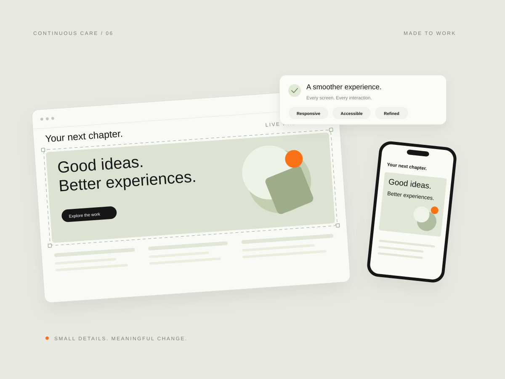

문제부터 확인
문제가 나타나는 화면과 재현 방법, 사용 중인 제작 도구를 먼저 확인합니다. 수정할 코드에 접근할 수 있는지 살펴보고, 현재 환경에서 가능한 작업 범위를 정리합니다.
WEBSITE CARE
모바일에서 화면이 깨지거나, 버튼이 동작하지 않거나, 바뀐 서비스 내용이 웹에 반영되지 않았을 때 시작할 수 있습니다. 현재 사이트와 소스를 확인해 문제의 원인과 손볼 부분을 정리하고, 화면·기능·콘텐츠를 필요한 범위부터 개선합니다. 이미 운영 중인 웹을 더 편하게 사용할 수 있도록 변경 사항과 확인 결과까지 정리합니다.
이런 작업 이야기하기
WHEN YOU NEED IT
WHAT YOU GET
불편했던 화면과 기능을 필요한 만큼 개선하고, 무엇이 바뀌었는지 확인할 수 있게 됩니다. 사용 중인 플랫폼이나 외부 서비스의 제약은 먼저 확인한 뒤 작업 방향을 안내합니다.
MADE FOR YOU
문제가 나타나는 화면과 재현 방법, 사용 중인 제작 도구를 먼저 확인합니다. 수정할 코드에 접근할 수 있는지 살펴보고, 현재 환경에서 가능한 작업 범위를 정리합니다.
문구와 이미지 교체부터 깨진 배치, 잘못된 링크, 버튼 동작과 모바일 화면을 다듬습니다. 추가 기능이 필요하다면 기존 구조에 연결할 수 있는지 확인해 함께 정합니다.
수정한 화면과 주요 동작을 확인하고, 바뀐 파일과 내용을 구분해 전달합니다. 이후 운영에 필요한 안내와 남아 있는 확인 사항도 함께 정리합니다.
필요한 기능과 제공 범위는 현재 환경을 확인한 뒤 함께 정합니다.
EXPLORE MORE
LET’S MAKE IT WORK
지금 필요한 것부터 편하게 이야기해 주세요.